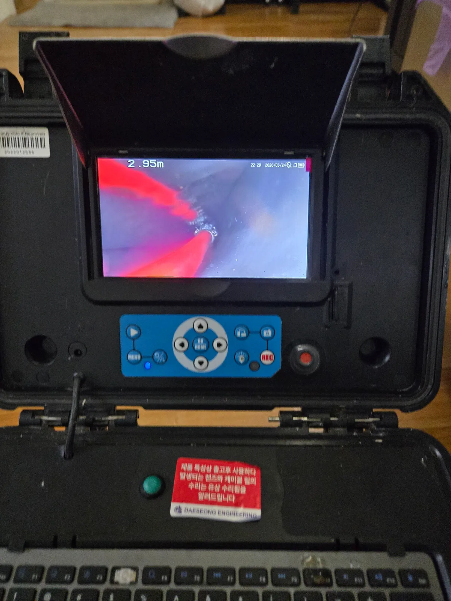

서초구 방배동 싱크대막힘, 현장 도착 후 진단
서초구 방배동 싱크대막힘 현장에 도착해 싱크대 배수 상태와 하부 배관을 점검했습니다. 싱크대 물이 느리게 내려가는 증상은 배관 안쪽에 오염물이 쌓이고 있다는 신호일 수 있습니다.
방배동 싱크대막힘의 정확한 위치를 찾기 위해 싱크대 하부장을 열고 배관 내시경 검사를 진행했습니다. 내시경 화면으로 약 2.95m 지점까지 확인한 결과, 배관 내부를 정리하는 샤프트 작업이 필요했습니다.
1단계: 증상 확인과 필요한 장비 작업
싱크대 하부 배관에 내시경 카메라를 투입해 싱크대 배관막힘 구간을 확인했습니다. 서초구 싱크대막힘 현장처럼 배관 내부를 직접 볼 수 없는 경우에는 배관 내시경을 사용하면 막힘 위치와 샤프트 진행 방향을 함께 확인할 수 있습니다.
사진 속 내시경 화면에 보이는 빨간색 라인은 배관 내부로 진입한 리지드 샤프트입니다. 내시경 화면을 보면서 샤프트가 막힘 구간에 정확하게 도달하도록 작업했습니다.

2단계: 원인 구간 처리와 정상 작동 확인
리지드 플렉스샤프트를 회전시켜 배관 내부에 쌓인 이물질과 오염물을 정리했습니다. 막힌 구간을 중심으로 배관스케일링을 진행해 좁아진 통수 공간을 확보했습니다.
방배동 싱크대 배관세척은 내시경 화면으로 작업 위치를 계속 확인하면서 진행했습니다. 샤프트 작업과 배관 내시경 검사를 병행해 불필요한 구간을 건드리지 않고 싱크대막힘이 발생한 구간을 집중적으로 정리했습니다.

작업 결과와 재발 방지 안내
서초구 방배동 싱크대막힘 구간을 리지드 샤프트로 배관스케일링한 뒤 싱크대 배수 상태를 점검했습니다. 배관 내시경으로 작업 구간을 다시 살펴보고 싱크대 배관세척을 마무리했습니다.
싱크대에 기름기와 음식물 찌꺼기가 반복적으로 들어가면 배관 내부에 오염물이 쌓여 싱크대막힘이나 싱크대역류가 발생할 수 있습니다. 싱크대 물이 느리게 내려가거나 꿀렁거리는 소리가 난다면 완전히 막히기 전에 배관 상태를 점검하는 것이 좋습니다.
서초구 싱크대막힘, 방배동 싱크대막힘, 싱크대 배관막힘, 싱크대역류, 배관 내시경 검사, 리지드 샤프트 배관스케일링이 필요한 현장이라면 신라건축설비가 신속하게 출동하겠습니다.
최종 조치: 싱크대 하부 배관으로 배관 내시경과 리지드 샤프트를 함께 투입했습니다. 내시경 화면을 보면서 막힘 구간을 배관스케일링하고 싱크대 배관의 통수 공간을 확보했습니다.
현장 방문 전 확인하는 비용과 작업 범위
신라건축설비는 현장 증상과 배관 구조를 확인한 뒤 필요한 작업과 예상 비용을 안내합니다. 단순 관통으로 해결되는지, 배관내시경·석션·고압세척 또는 추가 장비가 필요한지는 현장 상태에 따라 달라집니다. 출장비와 야간 작업비, 추가 장비 비용이 발생할 수 있는 경우 작업 전에 먼저 설명하고 동의를 받은 범위에서 진행합니다.
업체를 선택할 때 확인할 사항
무조건적인 ‘0원’ 표현보다 실제 작업 범위, 추가 비용 조건, 사용 장비와 사후 대응 기준을 확인하는 것이 중요합니다. 해결되지 않았을 때의 비용 기준과 작업 후 동일 증상 발생 시 점검 범위를 사전에 문의해두면 불필요한 분쟁을 줄일 수 있습니다.
서초구 싱크대막힘 자주 묻는 질문
싱크대 물이 천천히 내려가면 바로 점검해야 하나요?
방배동 싱크대에서 물이 원활하게 내려가지 않고 배수가 계속 느려지는 증상이 발생했습니다. 싱크대막혔을때 나타나는 전형적인 배수 불량으로, 배관 내부 점검과 싱크대 배관세척이 필요한 상태였습니다.처럼 증상이 나타나더라도 원인은 현장마다 다를 수 있습니다. 장비와 배관 구조를 확인한 뒤 필요한 작업 범위를 안내합니다.
작업 전 비용을 알 수 있나요?
작업 전 증상과 현장 여건을 확인해 예상 범위와 비용을 먼저 안내합니다. 변기 탈거, 장비 추가 투입 또는 공용배관 작업이 필요한 경우 고객 동의 없이 임의로 진행하지 않습니다.
약품으로 해결되지 않으면 어떻게 하나요?
완료 후 정상 작동을 함께 확인하고 작업 범위에 따른 사후 안내를 드립니다. 동일 증상이 반복되면 현장 기록을 기준으로 원인을 다시 점검합니다.
싱크대막힘 서울·경기 출동지역
신라건축설비는 서초구 방배동 현장을 포함해 서울 25개 구와 경기도 31개 시·군의 배관 문제를 상담합니다. 현장 거리와 기사 배정 상황에 따라 출동 가능 여부를 먼저 안내드립니다.
서울 전 지역
강남구 · 강동구 · 강북구 · 강서구 · 관악구 · 광진구 · 구로구 · 금천구 · 노원구 · 도봉구 · 동대문구 · 동작구 · 마포구 · 서대문구 · 서초구 · 성동구 · 성북구 · 송파구 · 양천구 · 영등포구 · 용산구 · 은평구 · 종로구 · 중구 · 중랑구
경기도 주요 출동지역
수원시 · 용인시 · 고양시 · 화성시 · 성남시 · 부천시 · 남양주시 · 안산시 · 평택시 · 안양시 · 시흥시 · 파주시 · 김포시 · 의정부시 · 광주시 · 하남시 · 광명시 · 군포시 · 양주시 · 오산시 · 이천시 · 안성시 · 구리시 · 의왕시 · 포천시 · 양평군 · 여주시 · 동두천시 · 과천시 · 가평군 · 연천군